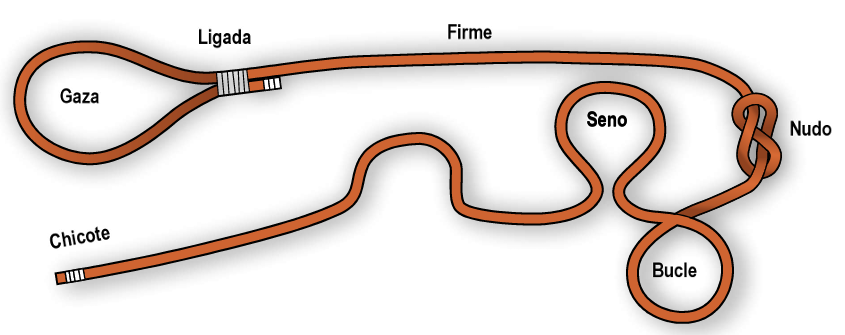
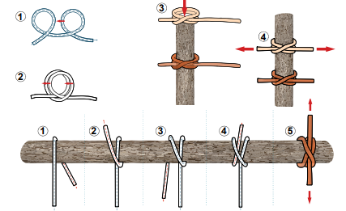
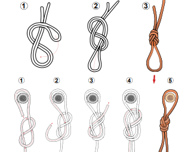
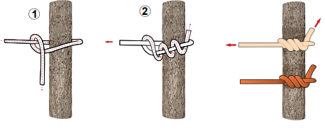
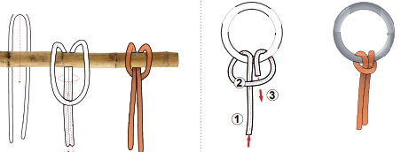
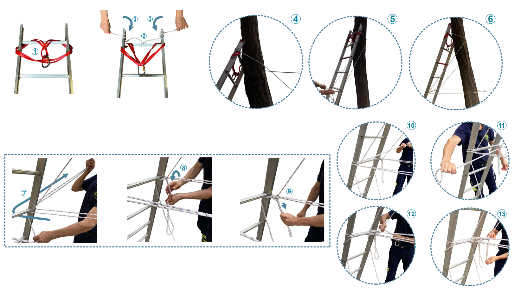

Técnicas de Trabajo en Altura - Arbolado
Cabuyería, nudos, técnicas de corte y procedimientos de seguridad
🪢 Cabuyería - Nudos Más Usados en Arbolado
Definición de Cabuyería
Disciplina que estudia el arte de hacer nudos, sus clases y distintas aplicaciones. En arbolado es indispensable para labores de aseguramiento, tiro y descenso controlado de material y ramas.
Disciplina que estudia el arte de hacer nudos, sus clases y distintas aplicaciones. En arbolado es indispensable para labores de aseguramiento, tiro y descenso controlado de material y ramas.
SEGURIDAD EN EL USO DE MATERIAL
Debemos diferenciar claramente el material de seguridad personal del material para movimiento de cargas. Nunca usaremos para levantar cargas material destinado al rescate de víctimas o trabajos en altura para personas.
Debemos diferenciar claramente el material de seguridad personal del material para movimiento de cargas. Nunca usaremos para levantar cargas material destinado al rescate de víctimas o trabajos en altura para personas.
Definiciones Básicas
Términos fundamentales en cabuyería:
Términos fundamentales en cabuyería:
🔗 Nudo
Estructura que se estrecha y cierra de modo que no se pueda abrir por sí sola, sirve para sujetar o amarrar.
🏁 Cabo o Chicote
Extremo o terminación de una cuerda.
🌀 Seno
Parte central de la cuerda.
➰ Bucle
Seno de la cuerda con medio giro. Sirve para sujetar o conectar elementos.
⭕ Gaza
Círculo de cuerda que se cierra sobre sí mismo mediante un nudo.
🟦 Firme
Parte de la cuerda que no participa en la elaboración del nudo.
🎀 Ligada
Sujeción de una o varias cuerdas mediante otra más delgada.

🔗 Nudos para Amarrar Elementos con Cuerda
Tipos de Elaboración
Los nudos pueden realizarse de dos maneras: "por seno" (sin usar extremos) o "por chicote" (usando al menos un extremo).
Los nudos pueden realizarse de dos maneras: "por seno" (sin usar extremos) o "por chicote" (usando al menos un extremo).
Ballestrinque
Para sujetar un cabo a una rama o elemento cilíndrico. Amarre rápido que debe someterse a tensión constante.
🔧
Elaboración por Seno
1. Hacer dos bucles similares seguidos
2. Cruzar el segundo sobre el primero
3. Introducir objeto en la gaza del nudo
4. Dar tensión al nudo
2. Cruzar el segundo sobre el primero
3. Introducir objeto en la gaza del nudo
4. Dar tensión al nudo
🔧
Elaboración por Chicote
1. Damos una vuelta sobre el objeto que se quiere amarrar
2. El chicote debe pisar el firme
3. En el mismo sentido, damos otra vuelta con el chicote
4. Introducimos por dentro del seno que hemos formado al dar esta segunda vuelta
5. Damos tensión al nudo
2. El chicote debe pisar el firme
3. En el mismo sentido, damos otra vuelta con el chicote
4. Introducimos por dentro del seno que hemos formado al dar esta segunda vuelta
5. Damos tensión al nudo
PRECAUCIÓN: No usar si la carga puede girar o sufrir movimientos inesperados.

Nudo de Ocho
Más recomendado como autoseguro. Útil para fijar cuerda y todo tipo de anclajes.
🔧
Elaboración por Seno
1. Hacer seno y enrollar los cabos
2. Hacer bucle como el número ocho
3. Sacar seno por el primer bucle
4. Ajustar y tensar
2. Hacer bucle como el número ocho
3. Sacar seno por el primer bucle
4. Ajustar y tensar
🔧
Elaboración por Chicote
1. Hacemos una gaza con el chicote rodeando el elemento
2. Reseguimos el nudo de ocho simple de forma inversa
3. Nuestro chicote terminará paralelo al firme
4. Ajustar y tensar
2. Reseguimos el nudo de ocho simple de forma inversa
3. Nuestro chicote terminará paralelo al firme
4. Ajustar y tensar

Nudo de Leñador
Nudo provisional alrededor de troncos para arrastrar, empujar, subir o bajar. Se estrangula a sí mismo con la tensión.
🔧
Elaboración
1. Rodear el chicote sobre el firme
2. Entrar y salir varias veces por el bucle generado
3. Evitar vueltas sobre el firme
2. Entrar y salir varias veces por el bucle generado
3. Evitar vueltas sobre el firme

Nudo de Alondra
Sujeta la cuerda a un objeto. A más tensión, más aprieta. Útil para colgar pesos o arrastrar troncos.
🔧
Elaboración por Seno
Introducimos los dos firmes por el bucle creado al rodear la rama con el seno
🔧
Elaboración por Chicote
1. Rodear el chicote abrazando el tronco
2. Cruzar el chicote sobre el firme
3. Rodear nuevamente en sentido inverso saliendo por dentro de la gaza formada
2. Cruzar el chicote sobre el firme
3. Rodear nuevamente en sentido inverso saliendo por dentro de la gaza formada

✂️ Técnica de Saneado en Altura (Los Tres Cortes)
Objetivo de la Técnica
Evitar que la rama al romperse bascule hacia nosotros o produzca desgarros en ramas principales y tronco, causando más daño al árbol.
Evitar que la rama al romperse bascule hacia nosotros o produzca desgarros en ramas principales y tronco, causando más daño al árbol.
1️⃣
Primer Corte - Corte de Alivio
• Realizar en parte inferior de la rama
• Eliminar corteza y romper fibras más superficiales
• Evita que la rama bascule hacia nosotros al romperse
• Eliminar corteza y romper fibras más superficiales
• Evita que la rama bascule hacia nosotros al romperse
2️⃣
Segundo Corte - Corte de Separación
• Realizar en parte superior
• Más distal al primer corte
• Separa la rama del árbol
• Más distal al primer corte
• Separa la rama del árbol
3️⃣
Tercer Corte - Corte de Acabado
• Llamado "corte de acabado"
• Ni muy cerca ni muy separado del tronco
• Con inclinación que siga la dirección del agua
• Favorece la compartimentalización y cicatrización
• Ni muy cerca ni muy separado del tronco
• Con inclinación que siga la dirección del agua
• Favorece la compartimentalización y cicatrización

PRECAUCIÓN
Realizar un solo corte de arriba a abajo causa que la rama se desgarre y bascule hacia nosotros, golpeando la escala o estructura. Es uno de los accidentes más frecuentes en trabajos en altura.
Realizar un solo corte de arriba a abajo causa que la rama se desgarre y bascule hacia nosotros, golpeando la escala o estructura. Es uno de los accidentes más frecuentes en trabajos en altura.
🪜 Colocación de Escalera para Acceso y Posicionamiento
Objetivo del Cosido
Realizar un trenzado del árbol con la escalera que proporcione tensión y firmeza al conjunto, soportando movimientos del bombero y del árbol.
Realizar un trenzado del árbol con la escalera que proporcione tensión y firmeza al conjunto, soportando movimientos del bombero y del árbol.
Material Necesario
Escalera con longitud suficiente, cuerda auxiliar, cuerda dinámica, dos mosquetones de seguridad, cinta para trabajos en altura, bloqueador y dos arneses integrales.
Escalera con longitud suficiente, cuerda auxiliar, cuerda dinámica, dos mosquetones de seguridad, cinta para trabajos en altura, bloqueador y dos arneses integrales.
🔧
Procedimiento de Anclaje
Sistema de Anclaje:
1. Colocar cinta que pase por los dos largueros (1)
2. Colocar mosquetón de seguridad en el centro
3. Pasar cuerda de seguridad para el bombero
Atado de la Escalera:
4. Hacer nudo de alondra en centro del travesaño (2)
5. Dar dos vueltas a sobrantes de largueros (3)
6. Cabos deben salir por parte inferior
Cosido de la Cuerda con el Árbol:
7. Realizar bucles cruzados en zigzag entre largueros y fuste
8. Mínimo dos bucles cruzados
9. Necesario dos compañeros para cruzar cabos en parte trasera
10. Regresar cabos a largueros (de dentro a afuera)
Nudo de Bloqueo:
11. Pasar cabo desde dentro hacia afuera (7)
12. Atar cabo al travesaño correspondiente dando vueltas (8)
13. Hacer gaza simple dos veces (9)
Nudo de Tensado:
14. Abrazar con vueltas los dos tramos finales (10-12)
15. Aplicar tensión entre los dos tramos
16. Hacer nudo final de gaza (13)
17. Verificar estabilidad antes de subir
1. Colocar cinta que pase por los dos largueros (1)
2. Colocar mosquetón de seguridad en el centro
3. Pasar cuerda de seguridad para el bombero
Atado de la Escalera:
4. Hacer nudo de alondra en centro del travesaño (2)
5. Dar dos vueltas a sobrantes de largueros (3)
6. Cabos deben salir por parte inferior
Cosido de la Cuerda con el Árbol:
7. Realizar bucles cruzados en zigzag entre largueros y fuste
8. Mínimo dos bucles cruzados
9. Necesario dos compañeros para cruzar cabos en parte trasera
10. Regresar cabos a largueros (de dentro a afuera)
Nudo de Bloqueo:
11. Pasar cabo desde dentro hacia afuera (7)
12. Atar cabo al travesaño correspondiente dando vueltas (8)
13. Hacer gaza simple dos veces (9)
Nudo de Tensado:
14. Abrazar con vueltas los dos tramos finales (10-12)
15. Aplicar tensión entre los dos tramos
16. Hacer nudo final de gaza (13)
17. Verificar estabilidad antes de subir

Procedimiento de Trabajo
Bombero sube asegurado por compañero, una vez arriba se ancla con grillón al árbol mediante anillas laterales del arnés, trabajando siempre coordinado con compañeros en suelo.
Bombero sube asegurado por compañero, una vez arriba se ancla con grillón al árbol mediante anillas laterales del arnés, trabajando siempre coordinado con compañeros en suelo.
🚒 Acceso y Posicionamiento desde Vehículo Aéreo (Autoescala)
Ventajas del Trabajo desde Autoescala
Método más seguro para intervenciones en parte alta de árboles (copa) cuando no es posible trabajar completamente desde suelo.
Método más seguro para intervenciones en parte alta de árboles (copa) cuando no es posible trabajar completamente desde suelo.
Factores de Seguridad Críticos
Consideraciones esenciales antes de comenzar trabajos desde autoescala:
Consideraciones esenciales antes de comenzar trabajos desde autoescala:
Aseguramiento Personal
Siempre trabajaremos asegurados a la cesta. Un pequeño golpe, hundimiento del terreno o fallo hidráulico puede provocar desplazamiento y sacudida violenta.
Aseguramiento de Herramientas
La motosierra debe estar asegurada a la cesta. Si se cae, debe quedar suspendida por debajo de la cesta.
Protección de Tráfico
Proteger la escala en zonas de tráfico. Esperar llegada de policía para regular tráfico si es necesario.
Evaluación de Ramas
Verificar que ninguna rama golpee o mueva la cesta. Antes de cortar, bajar lapa protectora del órgano de mando.
Precauciones Eléctricas
Observar cuidadosamente tendidos eléctricos en zona de trabajo. Mantener distancia de seguridad con cables y ramas.
Observar cuidadosamente tendidos eléctricos en zona de trabajo. Mantener distancia de seguridad con cables y ramas.
COORDINACIÓN EQUIPO SUELO-CESTA
Nunca retirar ramas caídas en suelo de forma simultánea a tareas de corte desde cesta. El equipo en suelo esperará a que finalice el trabajo en altura antes de recoger ramas.
Nunca retirar ramas caídas en suelo de forma simultánea a tareas de corte desde cesta. El equipo en suelo esperará a que finalice el trabajo en altura antes de recoger ramas.